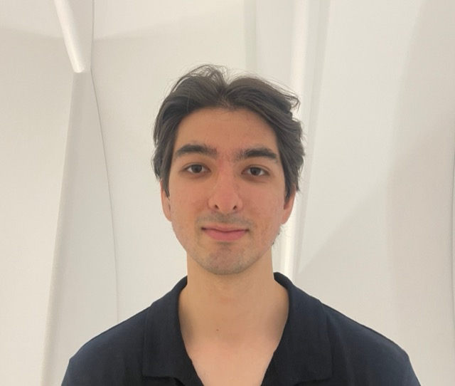
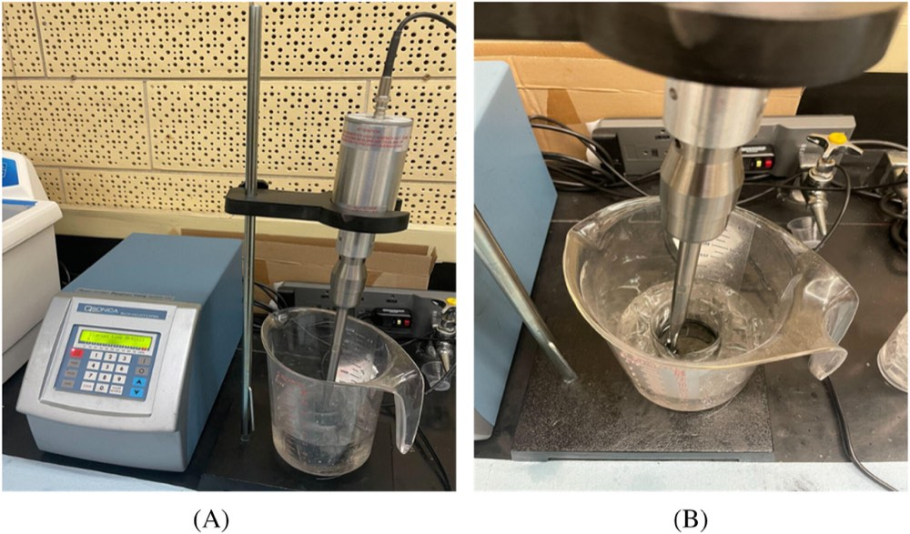
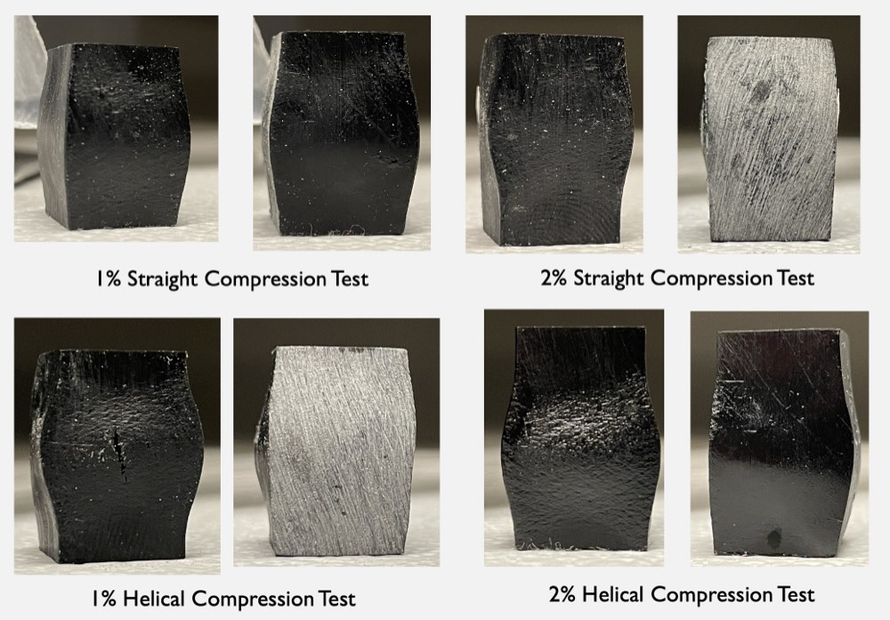
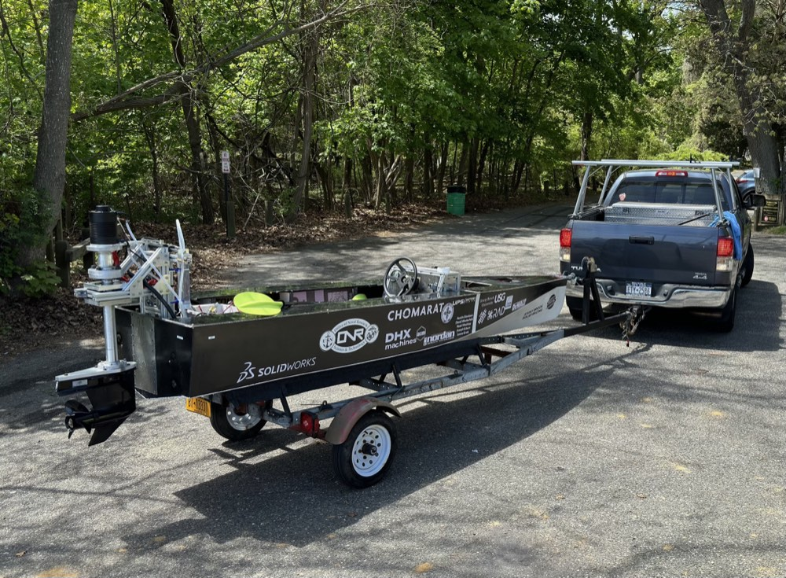

Soroush SaririanEIT
Data scientist working at the intersection of clinical biosignals, machine learning, and engineering. M.S. Applied Data Science, University of Florida. Published lead author in Polymer Composites.

Experience
Raytheon
Sep 2025 to May 2026
Largo, FL
AI/ML Engineering Project Intern
- Built an LLM-assisted static analysis pipeline on DARPA AI Cyber Grand Challenge technology to translate legacy Ada codebases into memory-safe C++ and Rust, on a project scoped at 912 internal engineering hours.
- Integrated multiple Cyber Reasoning Systems with LLM-driven source analysis to detect vulnerabilities and generate patches, delivering automated security reports to review boards.
- Designed evaluation harnesses benchmarking patch correctness across Ada-to-Rust translation, achieving 80% recall and driving iterative LLM prompt refinement.
Additional project metrics are under NDA.
University of Florida
Sep 2025 to Present
Graduate Research Assistant, Gait Analysis
- Led 3D gait data collection in stroke patients using motion capture, gait mat pressure sensors, and force plates to quantify spatiotemporal parameters, joint kinematics, and load distribution.
- Integrated multi-modal sensor data into movement profiles supporting clinical evaluation of balance, gait symmetry, and compensatory patterns in post-stroke rehabilitation.
- Collaborated with orthopaedic surgeons, neurologists, and physical therapists to translate findings into rehabilitation recommendations.
- First author of a manuscript on continuous reconstruction of swing-phase gait for locomotor instability assessment, currently in revision.
University of Florida
Sep 2025 to Present
Clinical Research Assistant
- Worked directly with study volunteers, obtaining informed consent, collecting baseline vitals, and running participants through standardized experimental protocols end to end.
- Coordinated human subjects protocols, managing IRB compliance documentation and participant screening for stroke rehabilitation studies.
- Maintained data integrity and protocol fidelity across a multidisciplinary clinical research team.
University of Florida
Sep 2025 to Present
Graduate Research Assistant, sEMG Signal Processing
- Developed and validated acquisition pipelines for the Shimmer3 sEMG system, implementing bandpass filtering, RMS windowing, and onset detection to extract physiological features from raw time-series signals.
- Analyzed muscle activation patterns and co-contraction timing in stroke survivors, identifying neuromuscular abnormalities relevant to gait rehabilitation.
- Processed EMG datasets in Python, MATLAB, and ConsensysPro, validating windowing parameters against clinical benchmarks.
University of Florida
Feb 2025 to May 2026
Graduate Researcher, Laser Metal Bending
- Developed a comparative ML framework spanning 16 algorithms, including stacking and voting ensembles, gradient boosting, and neural networks, to predict metal deformation angles, reaching an R2 of 0.84 on high-variability laser-on-metal data.
- Collected and processed experimental thermal-mechanical data, validating physical experiments against simulation outputs.
Stony Brook University
Feb 2023 to May 2024
Undergraduate Researcher
- Designed compressive testing protocols across 100+ CNT-reinforced epoxy nanocomposite samples, applying regression analysis to isolate a 15 to 20% strength gain from optimized reinforcement geometry.
- Published as lead author in Polymer Composites (doi.org/10.1002/pc.29076); awarded the Richard S. Lee Research Excellence Award.
Projects
VitalStream, Serverless Patient Telemetry Pipeline
- Serverless AWS pipeline (IoT Core, Kinesis, Lambda, SageMaker, DynamoDB) processing 500 Hz ECG and 2000 Hz sEMG streams through a 1D-CNN and BiLSTM ensemble for arrhythmia detection.
- Infrastructure as code with Terraform across 3 availability zones, HIPAA-aligned retention controls, 34 passing tests, blue/green deployment with automated rollback.
SymptaAI, Multi-Agent Clinical Decision Support
An 8-agent LangGraph pipeline covering record summarization, lab interpretation, drug interaction checking, and differential diagnosis. Generates ICD-10 coded outputs and care plans in under 2 minutes, with records persisted in PostgreSQL behind a FastAPI service layer.
Automated Skin Allergen Imaging Pipeline
Ensemble classifier (Random Forest, SVM, CNN) trained on 500+ clinical photographs to automate skin prick test wheal measurement: 95% detection accuracy, over 90% clinician-score correlation, per-patient scoring time cut from 5 minutes to 45 seconds.
medxplAIn, 3D Liver Tumor Segmentation
End-to-end PyTorch pipeline using a 3D U-Net to automate liver and tumor segmentation from 3D CT volumes for radiation therapy planning, reducing manual segmentation from hours to minutes.
RetinAI, Diabetic Retinopathy Screening
Screening tool that uses vision language models to analyze retinal images and flag diabetic retinopathy symptoms, designed to assist healthcare providers in resource-limited settings.
Engineering and research
Shimmer3 sEMG Acquisition Pipeline, UF Orthopaedics
Data acquisition and visualization pipeline for Shimmer3 sEMG sensors used in stroke gait studies. Python tooling cleans raw electromyography signals and isolates muscle activation patterns during walking trials, giving clinicians feedback on muscle firing rates to adjust therapy regimens.

CNT Nanocomposite Research
Compressive testing across 100+ CNT-reinforced epoxy nanocomposite samples, with ultrasonic homogenization processing and SEM/TEM microstructural characterization. Regression analysis isolated a 15 to 20% strength gain from optimized reinforcement geometry. Awarded the Richard S. Lee Research Excellence Award.


Stony Brook Solar Racing, Propulsion Lead
Led propulsion mechanical design for the 2024 Solar Splash competition. Machined custom drivetrain components, including motor mounts and couplers, on manual mills and lathes to sub-millimeter tolerance. The integrated electric motor system met all competition safety and performance benchmarks.


Education
- M.S. Applied Data Science, University of Florida
- B.E. Mechanical Engineering, Stony Brook University
Publications
- CNT-reinforced epoxy nanocomposites
- Continuous reconstruction of swing-phase gait for locomotor instability assessment
Certifications
- Engineer in Training (EIT)
- Cisco Python Essentials 1 and 2
Skills
- Languages
- Python, SQL, R, C++, Rust, MATLAB
- ML and AI
- PyTorch, TensorFlow, Scikit-learn, XGBoost, OpenCV, LangGraph, LangChain, Hugging Face, LLMs, RAG
- Cloud and MLOps
- AWS (Lambda, SageMaker, Kinesis, DynamoDB, S3), Docker, Kubernetes, Terraform, FastAPI, PostgreSQL, Linux
- Analytics
- Statistical Modeling, Design of Experiments, A/B Testing, Time-Series Analysis, Tableau, Power BI
Contact
Open to Data Scientist, new-grad ML, and clinical data analysis roles. Reach me by email or LinkedIn, or use the form.